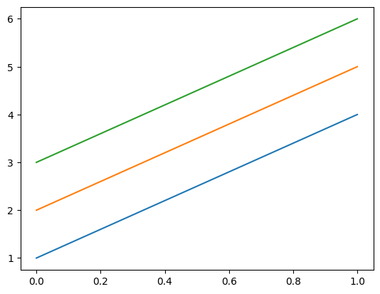

How to convert to/from NumPy#
As a generalization of NumPy, any NumPy array can be converted to an Awkward Array, but not vice-versa.
import awkward as ak
import numpy as np
From NumPy to Awkward#
The function for NumPy → Awkward conversion is ak.from_numpy().
np_array = np.array([1.1, 2.2, 3.3, 4.4, 5.5, 6.6, 7.7, 8.8, 9.9])
np_array
array([1.1, 2.2, 3.3, 4.4, 5.5, 6.6, 7.7, 8.8, 9.9])
ak_array = ak.from_numpy(np_array)
ak_array
[1.1, 2.2, 3.3, 4.4, 5.5, 6.6, 7.7, 8.8, 9.9] ----------------- type: 9 * float64
However, NumPy arrays are also recognized by the ak.Array constructor, so you can use that unless your goal is to explicitly draw the reader’s attention to the fact that the input is a NumPy array.
ak_array = ak.Array(np_array)
ak_array
[1.1, 2.2, 3.3, 4.4, 5.5, 6.6, 7.7, 8.8, 9.9] ----------------- type: 9 * float64
Fixed-size vs variable-length dimensions#
If the NumPy array is multidimensional, the Awkward Array will be as well.
np_array = np.array([[100, 200], [101, 201], [103, 203]])
np_array
array([[100, 200],
[101, 201],
[103, 203]])
ak_array = ak.Array(np_array)
ak_array
[[100, 200], [101, 201], [103, 203]] ------------------- type: 3 * 2 * int64
It’s important to notice that the type is 3 * 2 * int64, not 3 * var * int64. The second dimension has a fixed size—it is guaranteed to have exactly two items—just like a NumPy array. This differs from an Awkward Array constructed from Python lists:
ak.Array([[100, 200], [101, 201], [103, 203]])
[[100, 200], [101, 201], [103, 203]] --------------------- type: 3 * var * int64
or JSON:
ak.Array("[[100, 200], [101, 201], [103, 203]]")
[[100, 200], [101, 201], [103, 203]] --------------------- type: 3 * var * int64
because Python and JSON lists have arbitrary lengths, at least in principle, if not in a particular instance. Some behaviors depend on this fact (such as broadcasting rules).
From Awkward to NumPy#
The function for Awkward → NumPy conversion is ak.to_numpy().
np_array = np.array([1.1, 2.2, 3.3, 4.4, 5.5, 6.6, 7.7, 8.8, 9.9])
ak_array = ak.Array(np_array)
ak_array
[1.1, 2.2, 3.3, 4.4, 5.5, 6.6, 7.7, 8.8, 9.9] ----------------- type: 9 * float64
ak.to_numpy(ak_array)
array([1.1, 2.2, 3.3, 4.4, 5.5, 6.6, 7.7, 8.8, 9.9])
Awkward Arrays that happen to have regular structure can be converted to NumPy, even if their type is formally “variable length lists” (var):
ak_array = ak.Array([[1, 2, 3], [4, 5, 6]])
ak_array
[[1, 2, 3], [4, 5, 6]] --------------------- type: 2 * var * int64
ak.to_numpy(ak_array)
array([[1, 2, 3],
[4, 5, 6]])
But if the lengths of nested lists do vary, attempts to convert to NumPy fail:
ak_array = ak.Array([[1, 2, 3], [], [4, 5]])
ak_array
[[1, 2, 3], [], [4, 5]] --------------------- type: 3 * var * int64
ak.to_numpy(ak_array)
---------------------------------------------------------------------------
ValueError Traceback (most recent call last)
Cell In[14], line 1
----> 1 ak.to_numpy(ak_array)
File ~/micromamba-root/envs/awkward-docs/lib/python3.10/site-packages/awkward/operations/ak_to_numpy.py:44, in to_numpy(array, allow_missing)
39 with ak._errors.OperationErrorContext(
40 "ak.to_numpy",
41 dict(array=array, allow_missing=allow_missing),
42 ):
43 with numpy.errstate(invalid="ignore"):
---> 44 return ak._util.to_arraylib(numpy, array, allow_missing)
File ~/micromamba-root/envs/awkward-docs/lib/python3.10/site-packages/awkward/_util.py:821, in to_arraylib(module, array, allow_missing)
818 layout = ak.operations.to_layout(array, allow_record=True, allow_other=True)
820 if isinstance(layout, (ak.contents.Content, ak.record.Record)):
--> 821 return layout.to_numpy(allow_missing=allow_missing)
822 else:
823 return module.asarray(array)
File ~/micromamba-root/envs/awkward-docs/lib/python3.10/site-packages/awkward/contents/content.py:1015, in Content.to_numpy(self, allow_missing)
1014 def to_numpy(self, allow_missing: bool = True):
-> 1015 return self._to_numpy(allow_missing)
File ~/micromamba-root/envs/awkward-docs/lib/python3.10/site-packages/awkward/contents/listoffsetarray.py:1964, in ListOffsetArray._to_numpy(self, allow_missing)
1960 if array_param in {"bytestring", "string"}:
1961 return self._backend.nplike.array(self.to_list())
1963 return ak.operations.to_numpy(
-> 1964 self.to_RegularArray(), allow_missing=allow_missing
1965 )
File ~/micromamba-root/envs/awkward-docs/lib/python3.10/site-packages/awkward/contents/listoffsetarray.py:205, in ListOffsetArray.to_RegularArray(self)
200 size = ak.index.Index64.empty(1, self._backend.index_nplike)
201 assert (
202 size.nplike is self._backend.index_nplike
203 and self._offsets.nplike is self._backend.index_nplike
204 )
--> 205 self._handle_error(
206 self._backend[
207 "awkward_ListOffsetArray_toRegularArray",
208 size.dtype.type,
209 self._offsets.dtype.type,
210 ](
211 size.data,
212 self._offsets.data,
213 self._offsets.length,
214 )
215 )
217 return ak.contents.RegularArray(
218 content, size[0], self._offsets.length - 1, parameters=self._parameters
219 )
File ~/micromamba-root/envs/awkward-docs/lib/python3.10/site-packages/awkward/contents/content.py:231, in Content._handle_error(self, error, slicer)
228 message += filename
230 if slicer is None:
--> 231 raise ak._errors.wrap_error(ValueError(message))
232 else:
233 raise ak._errors.index_error(self, slicer, message)
ValueError: while calling
ak.to_numpy(
array = <Array [[1, 2, 3], [], [4, 5]] type='3 * var * int64'>
allow_missing = True
)
Error details: cannot convert to RegularArray because subarray lengths are not regular (in compiled code: https://github.com/scikit-hep/awkward-1.0/blob//src/cpu-kernels/awkward_ListOffsetArray_toRegularArray.cpp#L22)
One might argue that such arrays should become NumPy arrays with dtype="O". However, this is usually undesirable because these “NumPy object arrays” are just arrays of pointers to Python objects, and all the performance issues of dealing with Python objects apply.
If you do want this, use ak.to_list() with the np.ndarray constructor.
np.array(ak.to_list(ak_array), dtype="O")
array([list([1, 2, 3]), list([]), list([4, 5])], dtype=object)
Implicit Awkward to NumPy conversion#
Awkward Arrays satisfy NumPy’s __array__ protocol, so simply passing an Awkward Array to the np.ndarray constructor calls ak.to_numpy().
ak_array = ak.Array([[1, 2, 3], [4, 5, 6]])
ak_array
[[1, 2, 3], [4, 5, 6]] --------------------- type: 2 * var * int64
np.array(ak_array)
array([[1, 2, 3],
[4, 5, 6]])
Libraries that expect NumPy arrays as input, such as Matplotlib, use this.
import matplotlib.pyplot as plt
plt.plot(ak_array);

Implicit conversion to NumPy inherits the same restrictions as ak.to_numpy(), namely that variable-length lists cannot be converted to NumPy.
ak_array = ak.Array([[1, 2, 3], [], [4, 5]])
ak_array
[[1, 2, 3], [], [4, 5]] --------------------- type: 3 * var * int64
np.array(ak_array)
---------------------------------------------------------------------------
ValueError Traceback (most recent call last)
Cell In[20], line 1
----> 1 np.array(ak_array)
File ~/micromamba-root/envs/awkward-docs/lib/python3.10/site-packages/awkward/highlevel.py:1319, in Array.__array__(self, *args, **kwargs)
1317 arguments.update(kwargs)
1318 with ak._errors.OperationErrorContext("numpy.asarray", arguments):
-> 1319 return ak._connect.numpy.convert_to_array(self._layout, args, kwargs)
File ~/micromamba-root/envs/awkward-docs/lib/python3.10/site-packages/awkward/_connect/numpy.py:17, in convert_to_array(layout, args, kwargs)
16 def convert_to_array(layout, args, kwargs):
---> 17 out = ak.operations.to_numpy(layout, allow_missing=False)
18 if args == () and kwargs == {}:
19 return out
File ~/micromamba-root/envs/awkward-docs/lib/python3.10/site-packages/awkward/operations/ak_to_numpy.py:44, in to_numpy(array, allow_missing)
39 with ak._errors.OperationErrorContext(
40 "ak.to_numpy",
41 dict(array=array, allow_missing=allow_missing),
42 ):
43 with numpy.errstate(invalid="ignore"):
---> 44 return ak._util.to_arraylib(numpy, array, allow_missing)
File ~/micromamba-root/envs/awkward-docs/lib/python3.10/site-packages/awkward/_util.py:821, in to_arraylib(module, array, allow_missing)
818 layout = ak.operations.to_layout(array, allow_record=True, allow_other=True)
820 if isinstance(layout, (ak.contents.Content, ak.record.Record)):
--> 821 return layout.to_numpy(allow_missing=allow_missing)
822 else:
823 return module.asarray(array)
File ~/micromamba-root/envs/awkward-docs/lib/python3.10/site-packages/awkward/contents/content.py:1015, in Content.to_numpy(self, allow_missing)
1014 def to_numpy(self, allow_missing: bool = True):
-> 1015 return self._to_numpy(allow_missing)
File ~/micromamba-root/envs/awkward-docs/lib/python3.10/site-packages/awkward/contents/listoffsetarray.py:1964, in ListOffsetArray._to_numpy(self, allow_missing)
1960 if array_param in {"bytestring", "string"}:
1961 return self._backend.nplike.array(self.to_list())
1963 return ak.operations.to_numpy(
-> 1964 self.to_RegularArray(), allow_missing=allow_missing
1965 )
File ~/micromamba-root/envs/awkward-docs/lib/python3.10/site-packages/awkward/contents/listoffsetarray.py:205, in ListOffsetArray.to_RegularArray(self)
200 size = ak.index.Index64.empty(1, self._backend.index_nplike)
201 assert (
202 size.nplike is self._backend.index_nplike
203 and self._offsets.nplike is self._backend.index_nplike
204 )
--> 205 self._handle_error(
206 self._backend[
207 "awkward_ListOffsetArray_toRegularArray",
208 size.dtype.type,
209 self._offsets.dtype.type,
210 ](
211 size.data,
212 self._offsets.data,
213 self._offsets.length,
214 )
215 )
217 return ak.contents.RegularArray(
218 content, size[0], self._offsets.length - 1, parameters=self._parameters
219 )
File ~/micromamba-root/envs/awkward-docs/lib/python3.10/site-packages/awkward/contents/content.py:231, in Content._handle_error(self, error, slicer)
228 message += filename
230 if slicer is None:
--> 231 raise ak._errors.wrap_error(ValueError(message))
232 else:
233 raise ak._errors.index_error(self, slicer, message)
ValueError: while calling
numpy.asarray(
<Array [[1, 2, 3], [], [4, 5]] type='3 * var * int64'>
)
Error details: cannot convert to RegularArray because subarray lengths are not regular (in compiled code: https://github.com/scikit-hep/awkward-1.0/blob//src/cpu-kernels/awkward_ListOffsetArray_toRegularArray.cpp#L22)
NumPy’s structured arrays#
NumPy’s structured arrays correspond to Awkward’s “record type.”
np_array = np.array(
[(1, 1.1), (2, 2.2), (3, 3.3), (4, 4.4), (5, 5.5)], dtype=[("x", int), ("y", float)]
)
np_array
array([(1, 1.1), (2, 2.2), (3, 3.3), (4, 4.4), (5, 5.5)],
dtype=[('x', '<i8'), ('y', '<f8')])
ak_array = ak.from_numpy(np_array)
ak_array
[{x: 1, y: 1.1},
{x: 2, y: 2.2},
{x: 3, y: 3.3},
{x: 4, y: 4.4},
{x: 5, y: 5.5}]
----------------
type: 5 * {
x: int64,
y: float64
}ak.to_numpy(ak_array)
array([(1, 1.1), (2, 2.2), (3, 3.3), (4, 4.4), (5, 5.5)],
dtype=[('x', '<i8'), ('y', '<f8')])
Awkward Arrays with record type can be sliced by field name like NumPy structured arrays:
ak_array["x"]
[1, 2, 3, 4, 5] --------------- type: 5 * int64
np_array["x"]
array([1, 2, 3, 4, 5])
But Awkward Arrays can be sliced by field name and index within the same square brackets, whereas NumPy requires two sets of square brackets.
ak_array["x", 2]
3
np_array["x", 2]
---------------------------------------------------------------------------
IndexError Traceback (most recent call last)
Cell In[27], line 1
----> 1 np_array["x", 2]
IndexError: only integers, slices (`:`), ellipsis (`...`), numpy.newaxis (`None`) and integer or boolean arrays are valid indices
np_array["x"][2]
3
They have the same commutivity, however. In this example, slicing "x" and then 2 returns the same result as 2 and then "x".
ak_array[2, "x"]
3
np_array[2]["x"]
3
NumPy’s masked arrays#
NumPy’s masked arrays correspond to Awkward’s “option type.”
np_array = np.ma.MaskedArray(
[[1, 2, 3], [4, 5, 6]], mask=[[False, True, False], [True, True, False]]
)
np_array
masked_array(
data=[[1, --, 3],
[--, --, 6]],
mask=[[False, True, False],
[ True, True, False]],
fill_value=999999)
np_array.tolist()
[[1, None, 3], [None, None, 6]]
ak_array = ak.from_numpy(np_array)
ak_array
[[1, None, 3], [None, None, 6]] -------------------- type: 2 * 3 * ?int64
The ? before int64 (expands to option[...] for more complex contents) refers to “option type,” meaning that the values can be missing (“None” in Python).
It is possible for a dataset to have no missing data, yet still have option type, just as it’s possible to have a NumPy masked array with no mask.
ak.from_numpy(np.ma.MaskedArray([[1, 2, 3], [4, 5, 6]], mask=False))
[[1, 2, 3], [4, 5, 6]] -------------------- type: 2 * 3 * ?int64
Awkward Arrays with option type are converted to NumPy masked arrays.
ak.to_numpy(ak_array)
masked_array(
data=[[1, --, 3],
[--, --, 6]],
mask=[[False, True, False],
[ True, True, False]],
fill_value=999999)
ak.to_numpy(ak_array).tolist()
[[1, None, 3], [None, None, 6]]
Note, however, that the structure of an Awkward Array’s option type is not always preserved when converting to NumPy masked arrays. Masked arrays can only have missing numbers, not missing lists, so missing lists are expanded into lists of missing numbers.
For example, an array of type var * ?int64 can be converted into an identical NumPy structure:
ak_array1 = ak.Array([[1, None, 3], [None, None, 6]])
ak_array1
[[1, None, 3], [None, None, 6]] ---------------------- type: 2 * var * ?int64
ak.to_numpy(ak_array1).tolist()
[[1, None, 3], [None, None, 6]]
But an array of type option[var * int64] must have its missing lists expanded into lists of missing numbers.
ak_array2 = ak.Array([[1, 2, 3], None, [4, 5, 6]])
ak_array2
[[1, 2, 3], None, [4, 5, 6]] ----------------------------- type: 3 * option[var * int64]
ak.to_numpy(ak_array2).tolist()
[[1, 2, 3], [None, None, None], [4, 5, 6]]
Finally, it is possible to prevent the ak.to_numpy() function from creating NumPy masked arrays by passing allow_missing=False.
ak.to_numpy(ak_array, allow_missing=False)
---------------------------------------------------------------------------
ValueError Traceback (most recent call last)
Cell In[41], line 1
----> 1 ak.to_numpy(ak_array, allow_missing=False)
File ~/micromamba-root/envs/awkward-docs/lib/python3.10/site-packages/awkward/operations/ak_to_numpy.py:44, in to_numpy(array, allow_missing)
39 with ak._errors.OperationErrorContext(
40 "ak.to_numpy",
41 dict(array=array, allow_missing=allow_missing),
42 ):
43 with numpy.errstate(invalid="ignore"):
---> 44 return ak._util.to_arraylib(numpy, array, allow_missing)
File ~/micromamba-root/envs/awkward-docs/lib/python3.10/site-packages/awkward/_util.py:821, in to_arraylib(module, array, allow_missing)
818 layout = ak.operations.to_layout(array, allow_record=True, allow_other=True)
820 if isinstance(layout, (ak.contents.Content, ak.record.Record)):
--> 821 return layout.to_numpy(allow_missing=allow_missing)
822 else:
823 return module.asarray(array)
File ~/micromamba-root/envs/awkward-docs/lib/python3.10/site-packages/awkward/contents/content.py:1015, in Content.to_numpy(self, allow_missing)
1014 def to_numpy(self, allow_missing: bool = True):
-> 1015 return self._to_numpy(allow_missing)
File ~/micromamba-root/envs/awkward-docs/lib/python3.10/site-packages/awkward/contents/regulararray.py:1173, in RegularArray._to_numpy(self, allow_missing)
1170 if array_param in {"bytestring", "string"}:
1171 return self._backend.nplike.array(self.to_list())
-> 1173 out = self._content.to_numpy(allow_missing)
1174 shape = (self._length, self._size) + out.shape[1:]
1175 return out[: self._length * self._size].reshape(shape)
File ~/micromamba-root/envs/awkward-docs/lib/python3.10/site-packages/awkward/contents/content.py:1015, in Content.to_numpy(self, allow_missing)
1014 def to_numpy(self, allow_missing: bool = True):
-> 1015 return self._to_numpy(allow_missing)
File ~/micromamba-root/envs/awkward-docs/lib/python3.10/site-packages/awkward/contents/bytemaskedarray.py:985, in ByteMaskedArray._to_numpy(self, allow_missing)
984 def _to_numpy(self, allow_missing):
--> 985 return self.to_IndexedOptionArray64()._to_numpy(allow_missing)
File ~/micromamba-root/envs/awkward-docs/lib/python3.10/site-packages/awkward/contents/indexedoptionarray.py:1502, in IndexedOptionArray._to_numpy(self, allow_missing)
1500 return numpy.ma.MaskedArray(data, mask)
1501 else:
-> 1502 raise ak._errors.wrap_error(
1503 ValueError(
1504 "ak.to_numpy cannot convert 'None' values to "
1505 "np.ma.MaskedArray unless the "
1506 "'allow_missing' parameter is set to True"
1507 )
1508 )
1509 else:
1510 if allow_missing:
ValueError: while calling
ak.to_numpy(
array = <Array [[1, None, 3], [None, ...]] type='2 * 3 * ?int64'>
allow_missing = False
)
Error details: ak.to_numpy cannot convert 'None' values to np.ma.MaskedArray unless the 'allow_missing' parameter is set to True
You might want to do this to be sure that the output of ak.to_numpy() has type np.ndarray (or die trying).
NumpyArray shapes vs RegularArrays#
Note
Advanced topic: it is not necessary to understand the internal representation in order to use Awkward Arrays in data analysis.
One reason you might want to use ak.from_numpy() directly is to control how it is internally represented.
Inside of an ak.Array, data structures are represented by “layout nodes” such as ak.contents.NumpyArray and ak.contents.RegularArray.
np_array = np.array([[[1, 2], [3, 4], [5, 6]], [[7, 8], [9, 10], [11, 12]]], dtype="i1")
ak_array1 = ak.from_numpy(np_array)
ak_array1.layout
<NumpyArray dtype='int8' shape='(2, 3, 2)'>
[[[ 1 2]
[ 3 4]
...
[ 9 10]
[11 12]]]
</NumpyArray>
In the above, the shape is represented as part of the ak.contents.NumpyArray node, but it could also have been represented in ak.contents.RegularArray nodes.
ak_array2 = ak.from_numpy(np_array, regulararray=True)
ak_array2.layout
<RegularArray size='3' len='2'>
<content><RegularArray size='2' len='6'>
<content><NumpyArray dtype='int8' len='12'>
[ 1 2 3 4 5 6 7 8 9 10 11 12]
</NumpyArray></content>
</RegularArray></content>
</RegularArray>
In the above, the internal ak.contents.NumpyArray is one-dimensional and the shape is described by nesting it within two ak.contents.RegularArray nodes.
This distinction is technical: ak_array1 and ak_array2 have the same ak.type() and behave identically (including broadcasting rules).
ak.type(ak_array1)
ArrayType(RegularType(RegularType(NumpyType('int8'), 2), 3), 2)
ak.type(ak_array2)
ArrayType(RegularType(RegularType(NumpyType('int8'), 2), 3), 2)
ak_array1 == ak_array2
[[[True, True], [True, True], [True, True]], [[True, True], [True, True], [True, True]]] -------------------------------------------- type: 2 * 3 * 2 * bool
ak.all(ak_array1 == ak_array2)
True
Mutability of Awkward Arrays from NumPy#
Note
Advanced topic: unless you’re willing to investigate subtleties of when a NumPy array is viewed and when it is copied, do not modify the NumPy arrays that Awkward Arrays are built from (or build Awkward Arrays from deliberate copies of the NumPy arrays).
Awkward Arrays are not supposed to be changed in place (“mutated”), and all of the functions in the Awkward Array library return new values, rather than changing the old. However, it is possible to create an Awkward Array from a NumPy array and modify the NumPy array in place, thus modifying the Awkward Array. Wherever possible, Awkward Arrays are views of the NumPy data, not copies.
np_array = np.array([[1, 2, 3], [4, 5, 6]])
np_array
array([[1, 2, 3],
[4, 5, 6]])
ak_array = ak.from_numpy(np_array)
ak_array
[[1, 2, 3], [4, 5, 6]] ------------------- type: 2 * 3 * int64
# Change the NumPy array in place.
np_array *= 100
np_array
array([[100, 200, 300],
[400, 500, 600]])
# The Awkward Array changes as well.
ak_array
[[100, 200, 300], [400, 500, 600]] ------------------- type: 2 * 3 * int64
You might want to do this in some performance-critical applications. However, note that NumPy arrays sometimes have to be copied to make an Awkward Array.
For example, if a NumPy array is not C-contiguous and is internally represented as a ak.contents.RegularArray (see previous section), it must be copied.
# Slicing the inner dimension of this NumPy array makes it not C-contiguous.
np_array = np.array([[1, 2, 3], [4, 5, 6]])
np_array.flags["C_CONTIGUOUS"], np_array[:, :-1].flags["C_CONTIGUOUS"]
(True, False)
# Case 1: C-contiguous and not RegularArray (should view).
ak_array1 = ak.from_numpy(np_array)
ak_array1
[[1, 2, 3], [4, 5, 6]] ------------------- type: 2 * 3 * int64
# Case 2: C-contiguous and RegularArray (should view).
ak_array2 = ak.from_numpy(np_array, regulararray=True)
ak_array2
[[1, 2, 3], [4, 5, 6]] ------------------- type: 2 * 3 * int64
# Case 3: not C-contiguous and not RegularArray (should view).
ak_array3 = ak.from_numpy(np_array[:, :-1])
ak_array3
[[1, 2], [4, 5]] ------------------- type: 2 * 2 * int64
# Case 4: not C-contiguous and RegularArray (has to copy).
ak_array4 = ak.from_numpy(np_array[:, :-1], regulararray=True)
ak_array4
[[1, 2], [4, 5]] ------------------- type: 2 * 2 * int64
# Change the NumPy array in place.
np_array *= 100
np_array[:, :-1]
array([[100, 200],
[400, 500]])
# Case 1 changes as well because it is a view.
ak_array1
[[100, 200, 300], [400, 500, 600]] ------------------- type: 2 * 3 * int64
# Case 2 changes as well because it is a view.
ak_array2
[[100, 200, 300], [400, 500, 600]] ------------------- type: 2 * 3 * int64
# Case 3 changes as well because it is a view.
ak_array3
[[100, 200], [400, 500]] ------------------- type: 2 * 2 * int64
# Case 4 does not change because it is a copy.
ak_array4
[[1, 2], [4, 5]] ------------------- type: 2 * 2 * int64
In general, it can be hard to determine if an Awkward Array is a view or a copy because some operations need to construct a ak.contents.RegularArray. Furthermore, the view-vs-copy behavior can change from one version of Awkward Array to the next. It is only safe to rely on view-vs-copy behavior of Awkward Arrays that were directly created from NumPy arrays, as in the four cases above, not in any derived arrays (i.e. arrays produced from slices of Awkward Arrays or computed using functions from the Awkward Array library).
Mutability of Awkward Arrays converted to NumPy#
Note
Advanced topic: unless you’re willing to investigate subtleties of when an Awkward array is viewed and when it is copied, do not modify the NumPy arrays that Awkward Arrays are converted into (or make deliberate copies of the resulting NumPy arrays).
The considerations described above also apply to NumPy arrays created from Awkward Arrays. If possible, they are views, rather than copies, but these semantics are not guaranteed.
ak_array = ak.Array([[1, 2, 3], [4, 5, 6]])
ak_array
[[1, 2, 3], [4, 5, 6]] --------------------- type: 2 * var * int64
np_array = ak.to_numpy(ak_array)
np_array
array([[1, 2, 3],
[4, 5, 6]])
# Change the NumPy array in place.
np_array *= 100
np_array
array([[100, 200, 300],
[400, 500, 600]])
# The Awkward Array that it came from is changed as well.
ak_array
[[100, 200, 300], [400, 500, 600]] --------------------- type: 2 * var * int64
As a counter-example, a NumPy array constructed from an Awkward Array with missing data might not be a view. (It depends on the internal representation; the most common case of an ak.contents.IndexedOptionArray is not.)
ak_array1 = ak.Array([[1, None, 3], [None, None, 6]])
ak_array1
[[1, None, 3], [None, None, 6]] ---------------------- type: 2 * var * ?int64
np_array = ak.to_numpy(ak_array1)
np_array
masked_array(
data=[[1, --, 3],
[--, --, 6]],
mask=[[False, True, False],
[ True, True, False]],
fill_value=999999)
# Change the NumPy array in place.
np_array *= 100
np_array
masked_array(
data=[[100, --, 300],
[--, --, 600]],
mask=[[False, True, False],
[ True, True, False]],
fill_value=999999)
# The Awkward Array that it came from is not changed in this case.
ak_array1
[[1, None, 3], [None, None, 6]] ---------------------- type: 2 * var * ?int64